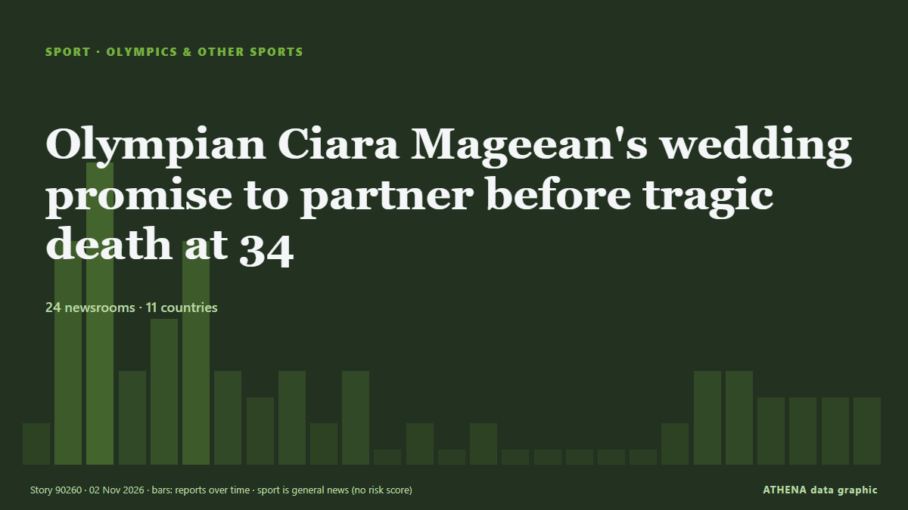

Олимпиада и другие виды
СпонсорПри поддержке  Cybernetics and Artificial Intelligence Lab Welcome to the Cybernetics and Artificial Intelligence Laboratory, established at the Department of Business Administration of the National
Cybernetics and Artificial Intelligence Lab Welcome to the Cybernetics and Artificial Intelligence Laboratory, established at the Department of Business Administration of the National
| 20 окт. | 0 |
|---|---|
| 21 окт. | 1 |
| 22 окт. | 0 |
| 23 окт. | 0 |
| 24 окт. | 0 |
| 25 окт. | 0 |
| 26 окт. | 1 |
| 27 окт. | 1 |
| 28 окт. | 2 |
| 29 окт. | 3 |
| 30 окт. | 5 |
| 31 окт. | 5 |
| 1 нояб. | 5 |
| 2 нояб. | 0 |
Заголовки приводятся на английском языке, как они были опубликованы.

Olympian Ciara Mageean's wedding promise to partner before tragic death at 34
‘Devastated’ Lady Mary Peters leads condolences. из Belfast Telegraph
Yamashita comes out on top at Maybank Championship
Highlights of round four of the LPGA Maybank Championship in Kuala Lumpur. из Sky Sports
Canelo reclaims WBC title as Mexico falls 5-4 to The World in Riyadh boxing showdown
RIYADH: Mexican boxing star Saul “Canelo” Alvarez reclaimed the World Boxing Council Super Middleweight title after defeating France’s Christian Mbilli by unanimous decision in the final bout of… из Arab News
Tim Seifert blasts 93 as New Zealand win fifth India T20
Hosts win final T20I as India clinch series 3-2. из Express Tribune
Ukraine calls allowing return of Russian ice hockey teams to world championships ‘unacceptable’
Foreign minister says return of Russian teams while Ukraine war continues would give Moscow international legitimacy it seeks. из Anadolu Agency (English)
Senegal kicks off 2026 Youth Olympic Games
Senegal’s three-day general strike entered its second day on Thursday, with unions pressing the government to honour agreements on pay, pensions and working conditions amid a deepening economic… из RFI English
Garcia bids for Ryder Cup return as he confirms LIV exit
European players such as Sergio Garcia have also been told that signing with the new-look LIV would make them ineligible for European Tour membership. из Free Malaysia Today
West Indies crush Bangladesh by eight wickets in first Test
MIRPUR: Brandon King struck a career-best 81 not out as West Indies cruised to an eight-wicket win over Bangladesh in the first Test on Saturday to take a 1-0 lead in the two-match series. из Business Recorder
Zaman's century foils Sri Lanka as Pakistan win tri-series
LAHORE: Opener Fakhar Zaman returned to form with a brilliant century to help Pakistan beat Sri Lanka by three wickets in the tri-series final in Lahore on Saturday. из Business Recorder
Dakar 2026 Youth Olympics opens in historic first for Africa
A Namibian team of 12 athletes will represent the nation at the first ever Youth Olympic Games in Africa, which kick off in Dakar, Senegal, tomorrow. из The Namibian
Maya Jama, Holly Willoughby and Stacey Solomon among stars in Halloween spirit
Celebrities were flaunting their costumes on social media on Saturday. из The Irish News (Belfast)
Nicholson feels motivated ahead of YOG
Ellina Mhlanga-Zimpapers Sports Hub RISING cyclist Rohnan Nicholson feels motivated as he braces for the Dakar 2026 Youth Olympic Games following a… из The Herald
Kamindu hits maiden ODI ton as Sri Lanka set Pakistan 326 in final
LAHORE: Kamindu Mendis hit a maiden ODI century and in-form Pavan Rathnayake scored 77 to guide Sri Lanka to 325-8 in the tri-series final against Pakistan in Lahore on Saturday. из Business Recorder
Complaints upheld against Swiss TV commentary on Israeli bobsleigher
Switzerland's broadcasting complaints authority announced Friday that a TV commentary questioning the legitimacy of an Israeli bobsleigher competing at the Milan-Cortina Winter Olympics had breached… из The Local Switzerland
Pakistan beat India in 23 balls after Krunal Pandya's disappointing show in Hong Kong Sixes
Dubai: Pakistan beat India by four wickets in the Hong Kong Sixes on Friday, chasing down a target of 89 in just 3.5 overs in their Group C clash at Mission Road Ground. из Gulf News
Hyrox athlete Joanna Wietrzyk who soiled herself in race says backlash was ‘traumatic’ ahead of comeback
Dubai: HYROX world champion Joanna Wietrzyk will return to competition in Hamburg, Germany, on Friday, October 30, after a human-waste contamination incident during a race in Beijing sparked… из Gulf News
Recap: Rugby League World Cup: Australia v Fiji
All the action as Australia's Kangaroos face the Fiji Bati at the Rugby League World Cup - kickoff 9.05pm Fiji time (10.05pm NZT). из RNZ Pacific
Chase sparks Bangladesh collapse as West Indies on top in Mirpur Test
West Indies' Royston Chase forces collapse as Bangladesh slump to 79-6, a lead of 106 runs, on day three of first Test. из Al Jazeera English